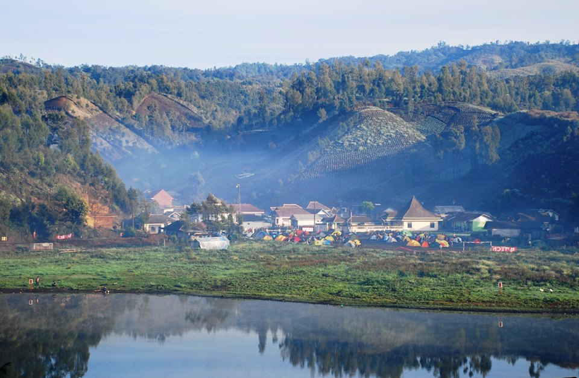

Ranu Kumbolo
Lokasi: Gunung Semeru, Lumajang, Jawa Timur
Fasilitas: Camping Ground
Jam Operasional: 24/7
Harga Tiket: -

Tumpak Sewu Waterfall
Lokasi: Desa Sidomulyo, Kecamatan Pronojiwo, Kabupaten Lumajang, Jawa Timur
Fasilitas: Parkir Area, Toilet Umum, Warung Makan, Selfie Area
Jam Operasional: 24/7
Harga Tiket: -

Puncak B-29
Lokasi: Desa Argosari, Kecamatan Senduro, Kabupaten Lumajang, Jawa Timur
Fasilitas: Parkir Area, Toilet Umum, Warung Makan, Selfie Area
Jam Operasional: 24/7
Harga Tiket: -
Glagah Arum Camping Ground
Lokasi: Desa Kandangtepus, Kecamatan Senduro, Kabupaten Lumajang, Jawa Timur
Fasilitas: Camping Ground, Parkir Area, Toilet Umum, Cafe, Selfie Area, Jembatan Gantung, Penginapan, dll.
Jam Operasional: Setiap Hari (09.00 - 22.00 WIB)
Harga Tiket: Rp20.000 - Rp1.000.000
Goa Tetes
Lokasi: Desa Sidomulyo, Kecamatan Pronojiwo, Kabupaten Lumajang, Jawa Timur
Fasilitas: Parkir Area, Toilet Umum, Warung Makan.
Jam Operasional: 24/7
Harga Tiket: -

Pura Mandara Giri Semeru Agung
Lokasi: Desa Senduro, Kecamatan Senduro, Kabupaten Lumajang, Jawa Timur
Fasilitas: Parkir Area, Warung Makan.
Jam Operasional: 24/7
Harga Tiket: -
Puncak Mahameru
Lokasi: Desa Sidomulyo, Kecamatan Pronojiwo, Kabupaten Lumajang, Jawa Timur
Fasilitas: Parkir Area, Warung Makan, Camping Ground.
Jam Operasional: 24/7
Harga Tiket: -
Kebun Teh Kertowono
Lokasi: Desa Kertowono, Kecamatan Gucialit, Kabupaten Lumajang, Jawa Timur
Fasilitas: Parkir Area, Warung Makan, Gazebo, Toilet Umum, Toko Oleh-Oleh.
Jam Operasional: Setiap Hari (Pukul 08.00-17.00 WIB)
Harga Tiket: -
Kapas Biru Waterfall
Lokasi: Desa Pronojiwo, Kecamatan Pronojiwo, Kabupaten Lumajang, Jawa Timur
Fasilitas: Parkir Area, Gazebo, Toilet Umum.
Jam Operasional: Setiap Hari (Pukul 06.30-19.00 WIB)
Harga Tiket: Rp5.000 - Rp7.000/orang

Tirtosari View
Lokasi: Gunung Gendil, Kecamatan Penanggal, Kabupaten Lumajang, Jawa Timur
Fasilitas: Parkir Area, Gazebo, Toilet Umum, Warung Makan, Selfie Area.
Jam Operasional: Setiap Hari
Harga Tiket: Rp5.000/orang
Siti Sundari
Lokasi: Desa Burno, Kecamatan Senduro, Kabupaten Lumajang, Jawa Timur
Fasilitas: Parkir Area, Gazebo, Toilet Umum, Warung Makan, Outbond Area.
Jam Operasional: Setiap Hari
Harga Tiket: -
Pemandian Alam Selokambang
Lokasi: Desa Purworejo, Kecamatan Senduro, Kabupaten Lumajang, Jawa Timur
Fasilitas: Parkir Area, Gazebo, Toilet Umum, Kantin, Flying Fox, Bicycle Arena, dll.
Jam Operasional: Setiap Hari (Pukul 07.30-18.00 WIB)
Harga Tiket: Rp10.000/orang
Kawasan Wonorejo Terpadu
Lokasi: Desa Wonorejo, Kecamatan Kedungjajang, Kabupaten Lumajang, Jawa Timur
Fasilitas: Kolam Renang, Boom Boom Car, Parkir Area, Gazebo, Toilet Umum, Food Court, dll.
Jam Operasional: Setiap Hari (Pukul 09.00-18.00 WIB)
Harga Tiket: Rp15.000 - Rp20.000/orang
Pantai Dampar
Lokasi: Jalan Gondoruso, Desa Kalibendo, Kecamatan Pasirian, Kabupaten Lumajang, Jawa Timur
Fasilitas: Parkir Area, Gazebo, Toilet Umum, Food Court.
Jam Operasional: 24/7
Harga Tiket: -
Pantai Watu Pecak
Lokasi: Desa Selok Awar-awar, Kecamatan Pasirian, Kabupaten Lumajang, Jawa Timur
Fasilitas: Parkir Area, Gazebo, Toilet Umum, Kantin, dll.
Jam Operasional: 24/7
Harga Tiket: -

Gunung Lemongan
Lokasi: Kabupaten Lumajang, Jawa Timur
Fasilitas: Pos Rest, Camping Ground.
Jam Operasional: Setiap Hari 24 jam
Harga Tiket: -
Situs Biting
Lokasi: Desa Kutorenon, Kecamatan Sukodono, Kabupaten Lumajang, Jawa Timur
Fasilitas: Parking Area, Gazebo, Toilet Umum.
Jam Operasional: Setiap Hari 24 jam
Harga Tiket: -
Tempoeran Toebing Adventure
Lokasi: Dusun Tempoeran, Desa Senduro, Kecamatan Senduro, Kabupaten Lumajang, Jawa Timur
Fasilitas: Parking Area, Tubing, Toilet Umum, Food Court, Kamar Ganti.
Jam Operasional: Setiap Hari (08.00-18.00 WIB)
Harga Tiket: Rp48.000/orang
Hutan Bambu
Lokasi: Desa Sumber Mujur, Kecamatan Candipuro, Kabupaten Lumajang, Jawa Timur
Fasilitas: Toilet Umum, Parking Area, Gazebo, Pemandian, Bambu Forest, Hotel.
Jam Operasional: Setiap Hari 24 jam
Harga Tiket: -

Veteran Swimming Pool
Lokasi: Jalan Veteran Desa Karangsari, Kecamatan Sukodono, Kabupaten Lumajang, Jawa Timur
Fasilitas: Toilet Umum, Parking Area, Gazebo, Pemandian,Ruang Ganti, Kantin, Musholla, Penyewaan Alat Renang.
Jam Operasional: Setiap Hari (08.00 - 18.00 WIB)
Harga Tiket: Rp10.000/orang
Pantai Mbah Drajid Wotgalih
Lokasi: Desa Wotgalih, Kecamatan Yosowilangun, Kabupaten Lumajang, Jawa Timur
Fasilitas: Toilet Umum, Parking Area, Gazebo, Pemandian, Camping Ground.
Jam Operasional: Setiap Hari 24 jam
Harga Tiket: -
Museum Daerah
Lokasi: Kawasan Wonorejo Terpadu Desa Wonorejo, Kecamatan Kedungjajang, Kabupaten Lumajang, Jawa Timur
Fasilitas: Toilet Umum, Parking Area, Ruang Pameran.
Jam Operasional: Setiap Hari (08.00 - 16.00 WIB)
Harga Tiket: Rp3.000/orang

Paralayang Gunung Wayang
Lokasi: Desa Sumber Mujur, Kecamatan Candipuro, Kabupaten Lumajang, Jawa Timur
Fasilitas: Toilet Umum, Parking Area, Landing Area.
Jam Operasional: Setiap Hari (08.00 - 16.00 WIB)
Harga Tiket: -
Hutan Pinus Penanggal
Lokasi: Dusun Rekasan Desa Penanggal, Kecamatan Candipuro, Kabupaten Lumajang, Jawa Timur
Fasilitas: Toilet Umum, Parking Area, Food Court, Camping Ground, .
Jam Operasional: Setiap Hari
Harga Tiket: Gratis

Ranupane
Lokasi: Basecamp Semeru, Bromo Tengger Semeru National Park, Kecamatan Jogoyudan, Kabupaten Lumajang, Jawa Timur
Fasilitas: Camping Ground
Jam Operasional: Setiap Hari
Harga Tiket: Gratis